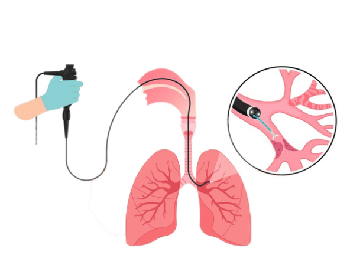

The pressure applied to the cuff of an endotracheal tube to secure it in place.
Situation where securing the airway is challenging due to anatomical or clinical factors.
An airway tube with two lumens allowing ventilation of each lung separately.
Immediate airway management to ensure breathing in critical situations.
Urgent procedure to secure an airway through an incision in the cricothyroid membrane.
A tube inserted into the trachea to maintain an open airway for ventilation.
Removal of an airway tube once the patient can breathe independently.
Failure to successfully place an airway tube, requiring alternative strategies.
Intubation using a flexible fiberoptic scope to guide the tube.
Device delivering high-flow oxygen through nasal prongs to improve oxygenation.
Elevated levels of carbon dioxide in the blood.
Blockage in the area of the pharynx below the soft palate affecting breathing.
Inadequate ventilation leading to insufficient oxygen intake or carbon dioxide removal.
Low levels of oxygen in the blood.
Insertion of a tube into the airway to assist with breathing.
Swelling of the larynx that can obstruct the airway.
A device placed over the larynx to maintain airway patency during anesthesia.
Blockage or narrowing of the larynx affecting airflow.
Instrument used to visualize the larynx and facilitate intubation.
Manual provision of breathing